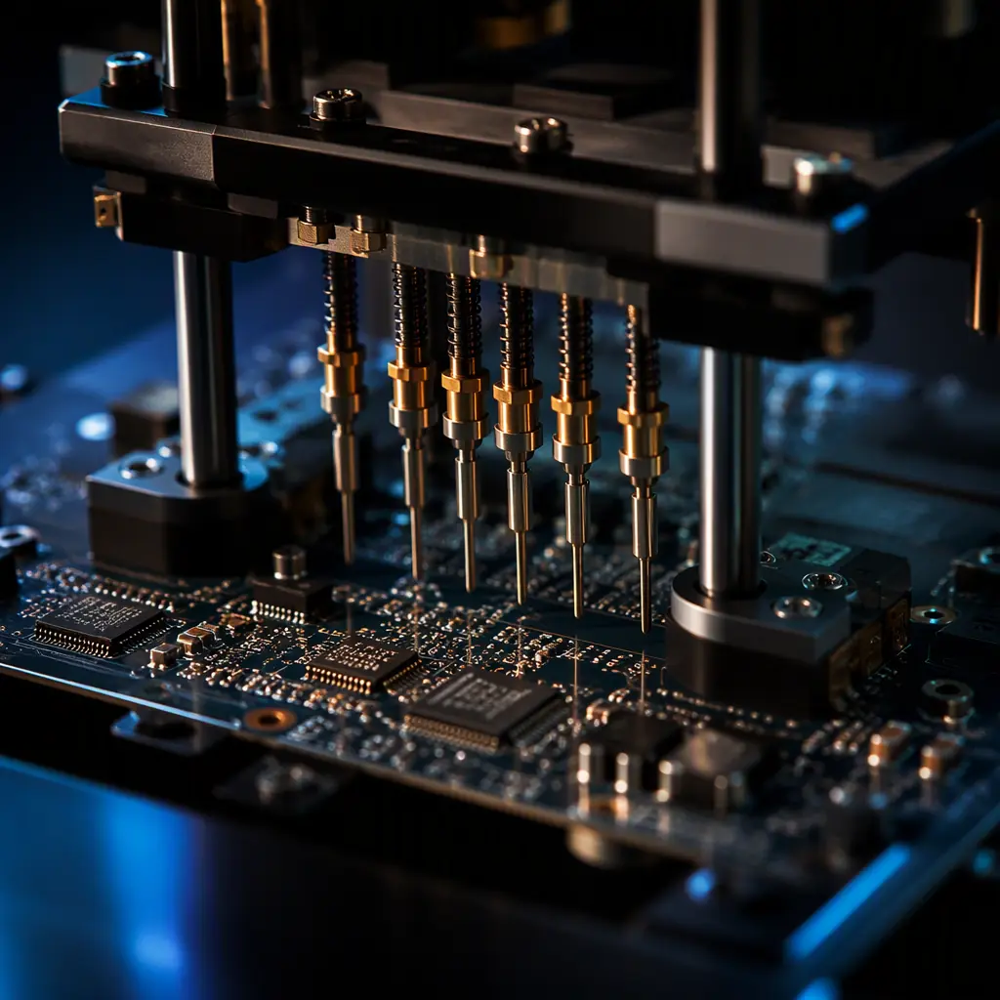
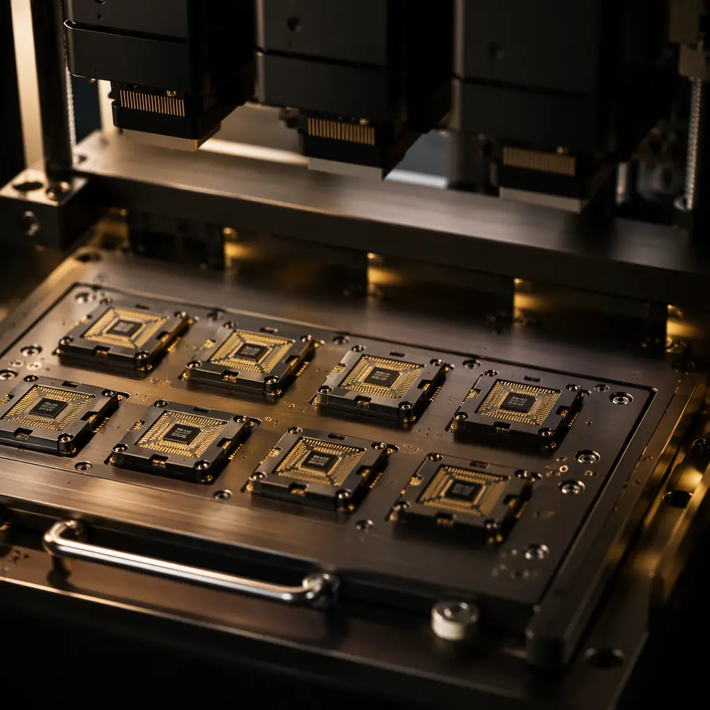

Every product that contains a microcontroller, flash memory, EEPROM, or one-time-programmable (OTP) device eventually needs its firmware written — and where that happens in the supply chain determines your cost, your schedule, and your security exposure. Programming at the bare-board stage, at the assembled-board stage, or at the box-build stage are three different operations with different yields, different test coverage, and different failure modes. For a procurement manager, the question is not "can the factory program ICs" — almost every PCBA assembler can — but "how, when, and with what controls."
At Huaxing PCBA, firmware flashing is a standard production service across our 8 SMT lines, with dedicated programming stations, controlled firmware handling, and program-verify coverage on every assembled unit. This guide explains the two main methods, the device families we program daily, the security and traceability controls that protect your firmware, and the five specifications that belong on every order that includes programming.

In-Circuit vs Offline Programming — The Core Decision
There are two fundamentally different ways to get firmware into a device, and each fits a different production scenario. The choice affects yield, cycle time, and how many boards you can recover when a program fails.
In-Circuit Programming (ICP) — After Assembly, Through Test Points
ICP writes firmware through the board's own test points or a boundary-scan chain (JTAG/SWD) after reflow, using a flying-probe or bed-of-nails style fixture. Its big advantage: the device is programmed in its final circuit, so the programmer can also power the rail and verify the surrounding power and clock circuitry at the same time. Yield issues are recoverable — a failed program is simply retried before the board moves on. ICP integrates naturally into our flying probe and functional test flow, so programming and test share one fixture pass.
Offline / Gang Programming — Before Assembly, on the Component
Offline programming writes the firmware to bare components — usually QFN, BGA, or tray-loaded flash parts — before they are placed on the board, using a socketed gang programmer. This is the right choice when the MCU or memory has no accessible programming pins after assembly, when you want every device verified before it commits to a board, or when you are programming hundreds of identical parts and want maximum throughput. The trade-off: the programmed state is set before solder, so any later corruption requires a rework cycle rather than a simple retry — see our rework and repair guide for how that is handled.
| Criteria | In-Circuit (ICP) | Offline / Gang |
|---|---|---|
| When programming happens | After reflow, on assembled board | Before placement, on bare component |
| Typical devices | MCU, SoC, CPLD, SPI flash with test points | QFN/BGA MCU, tray flash, EEPROM, OTP |
| Failed-program recovery | Retry in fixture (fast) | Rework or discard component |
| Throughput for high volume | Moderate — one board at a time | High — 8-32 sockets per gang unit |
| Circuits verified during program | Power, clock, reset, IO pins | Component only |
| Best fit | Prototype, low-medium volume, test-rich boards | High volume, no-pin-access devices |
Key Takeaway: Many orders combine both — gang-program the high-pin-count BGA flash offline for throughput, then use ICP for the on-board MCU during functional test. Specifying "program during test" without naming the method often produces the slower, more expensive of the two flows.
Device Families We Program — and the Formats That Keep Them Straight
Programming support is not uniform across assemblers. Before you qualify a factory for a firmware-bearing product, confirm the device families and file formats they handle natively. At Huaxing PCBA the daily workload covers the following categories, and our engineering team validates each new device against the programmer's device library before production.
Microcontrollers — Arm Cortex, RISC-V, 8051, PIC and AVR Families
MCU programming is the most common request. We support SWD and JTAG debug interfaces for Arm Cortex-M and Cortex-A parts, plus vendor-specific protocols for STM32, NXP, Microchip, Renesas, ESP32 and domestic Chinese MCU vendors. Firmware is delivered as hex, binary, or ELF; we verify the checksum after programming and log the result per serial number.
Serial Flash, EEPROM, and OTP Devices
NOR flash (SPI/QSPI), serial EEPROM (I2C/SPI), and OTP parts are programmed offline in gang sockets for high volume or in-circuit where the design exposes the bus. For data files — calibration tables, MAC addresses, serial numbers — we support auto-incrementing serialization, so each unit gets a unique value without a separate file per unit.
CPLD / FPGA Configuration Devices
Configuration PROMs and CPLDs follow the same gang-program flow as flash. For FPGA designs, the configuration bitstream is usually loaded from an external flash at power-up, so the practical work is programming that flash — which falls under the serial flash category above.

Firmware Security — What Happens to Your Hex File at the Factory
Firmware is intellectual property, and the moment it leaves your server it becomes a supply-chain security question. A serious assembler treats your hex file the way it treats a customer's proprietary BOM: access-controlled, logged, and destroyed on request. These are the controls we operate, and the ones you should ask any candidate factory about.
Controlled Firmware Reception and Storage
Firmware is received through a controlled channel (encrypted transfer or the project portal), stored on access-controlled drives, and never placed in shared production folders. Access is limited to the programming engineering team, and every copy event is logged. This complements the broader IP protection measures you should have in your contract manufacturing agreement.
Read-Back Protection and Post-Program Locks
For MCUs that support it, we enable the vendor's read-out protection (RDP) level after programming as specified in your order — this prevents firmware extraction from a production unit. Note that locking is irreversible for some families, so we confirm the requirement in writing before applying it, and we keep a small unlocked sample batch if your team needs post-lock debugging.
Firmware Disposal at Project End
When the order completes, we delete project firmware from programming stations and return or destroy delivered media per your instruction. A data-destruction certificate is available for regulated industries — the same discipline documented in our lot traceability and IPC-1782 guide for serialized records.
Program-Verify Coverage — the Quality Metric That Matters
Programming is not a "fire and forget" operation: every programmed device should be verified by reading it back and comparing against the source image. The verification policy is where quality differences between assemblers show up. Ask for the program-verify rate on the quality report — some factories verify only a sample; we verify 100% of programmed units, then confirm the checksum again at functional test where the design allows.
Factory Reality: On a typical 5,000-unit run with 100% program-verify, we see 0.1-0.4% first-pass program failures — most caused by marginal sockets or contact issues, virtually all recovered on retry. If a supplier reports zero program failures ever, the more likely explanation is that they are not verifying everything.
The Five Specifications That Belong on Every Programming Order
Programming failures are almost always specification failures — the firmware version, the method, or the verify requirement was never written down. Add these five items to your purchase order or assembly notes, and the programming step becomes predictable.
Exact Firmware File, Version, and Checksum
Name the file, the build version, and the SHA-256 checksum. A checksum mismatch at receipt is the cheapest failure to catch — it happens before a single device is programmed. Also state who approves a version change and how it is communicated (change order, not email).
Programming Method — ICP, Offline, or Both
Specify in-circuit, offline/gang, or a combination (e.g., "gang-program U3 flash offline; ICP program MCU during functional test"). If you don't care, say "assembler's choice" — but know that you are delegating a cost and yield decision.
Serialization Rules
If units need unique serial numbers, MAC addresses, or calibration values: state the format, the start value, the increment, and where the value is also written (label, barcode, or both). We support auto-increment serialization with a per-lot report.
Verify and Test Requirements
Require 100% program-verify with read-back comparison, and state whether programming is followed by functional test. Tie the programming step into your test strategy so a program failure is caught at the earliest stage — ideally before the board is conformal-coated or potted.
Security and Disposal Terms
Reference your NDA, require read-out protection where supported, and specify firmware deletion at project end. Make the security controls part of the order — not a verbal assumption — so both sides are auditable.
Programming and the Rest of the Assembly Flow
Programming interacts with other production steps in ways that are easy to miss. Boards that will be conformal coated or potted must be programmed before the coating step — a coated programming pad is a rework. Boards with burn-in or ESS requirements should be programmed before burn-in so the stress test exercises real firmware. And for box-build programs, the final system-level configuration often happens after integration — make sure the order distinguishes board-level programming from system-level flashing so the work is not done twice.
At Huaxing PCBA, IC programming is offered as a standard option on turnkey and consignment programs alike — see our turnkey assembly overview for how programming, test, and box-build combine into one responsible supplier. Send us your BOM and firmware plan and our engineering team will confirm device support, programming method, and program-verify coverage before you commit to a schedule.